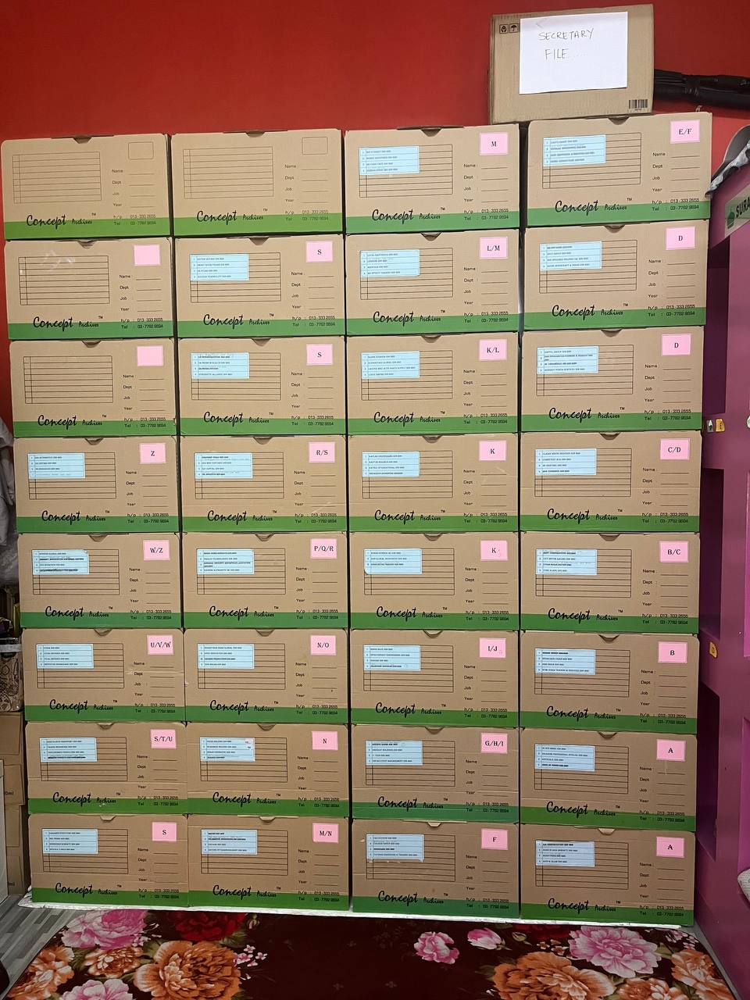
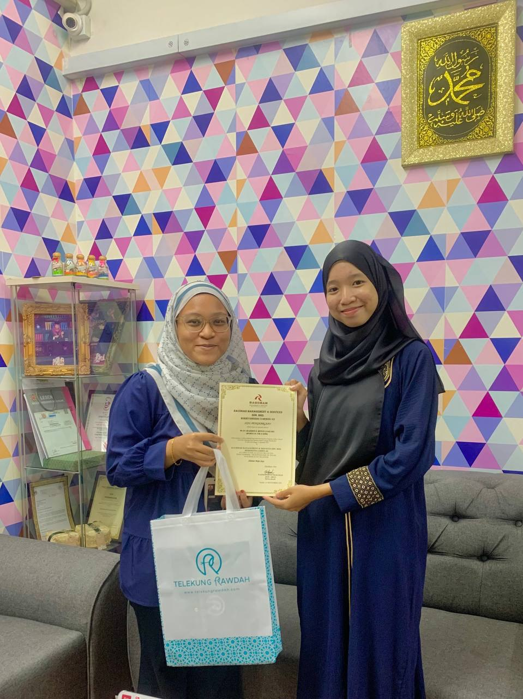
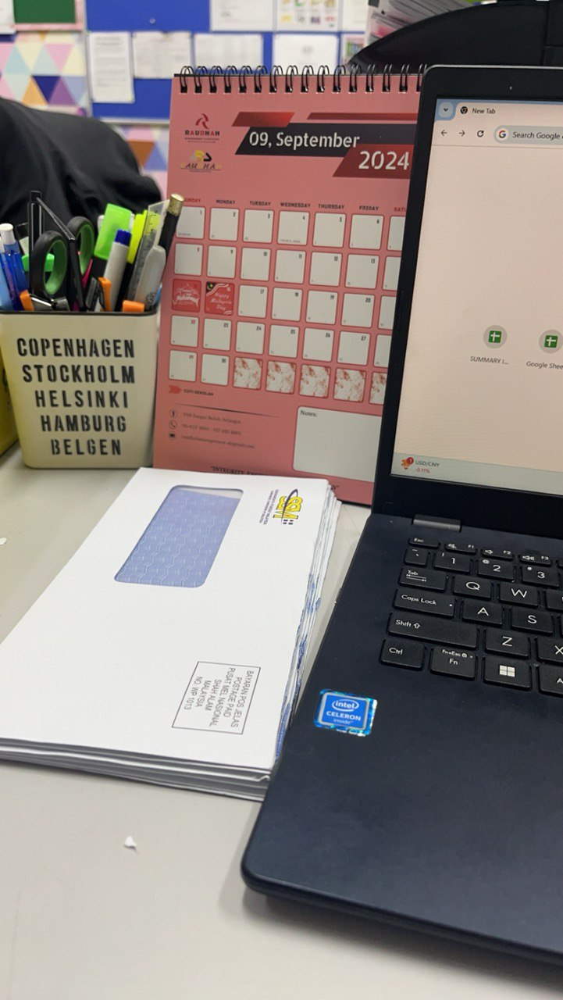
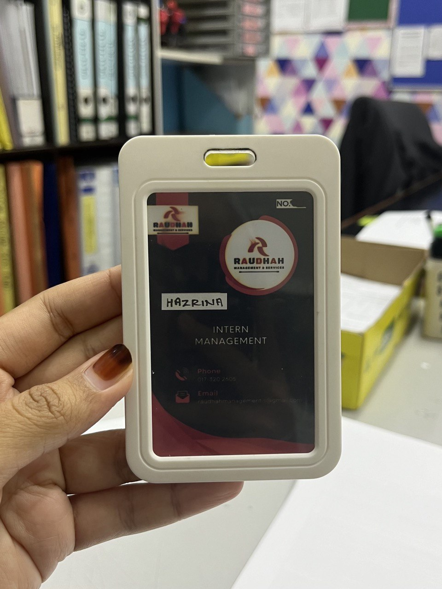

In my last semester, I had the opportunity to do an internship at Raudhah Management & Services, a company that provides secretarial services. The company offers a range of services to clients, such as:
During my internship, I was able to apply the skills I learned from my Information Management course, such as data organization, document management, and processing client information. I assisted with administrative tasks, which gave me a deeper understanding of how information management plays a crucial role in a company's operations, especially in the context of secretarial services. It was a valuable experience that helped bridge the gap between my academic knowledge and real-world applications.
Valuable experience i got during internship:
Some of my internship photos⋆𐙚₊˚⊹♡



